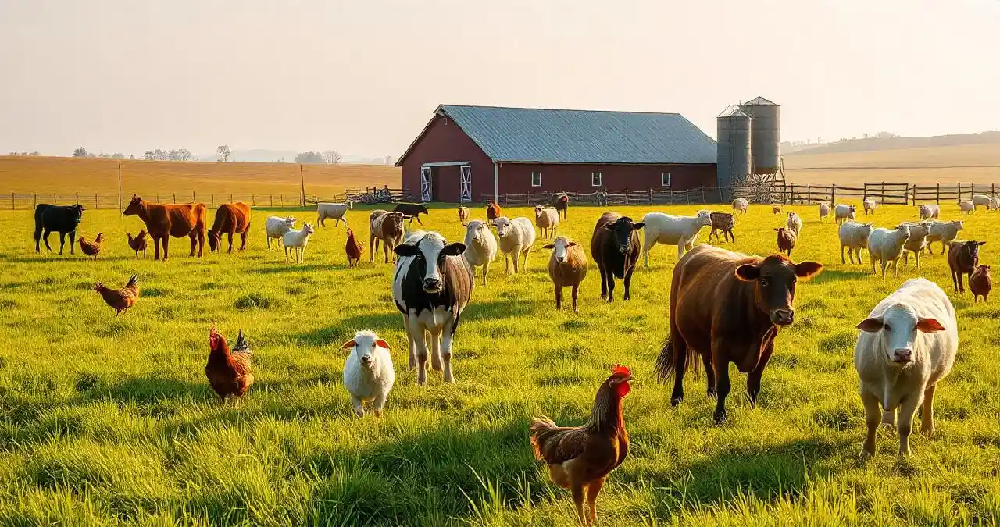
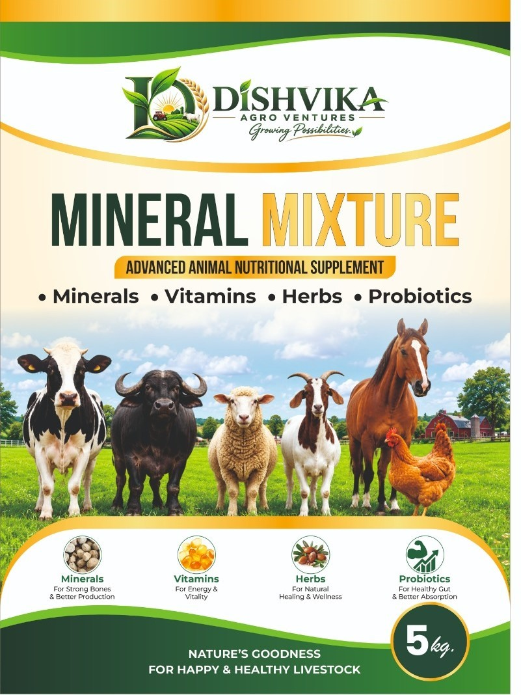

🌱
01
Smart Agriculture
Practical approaches for modern and efficient farming.
DISHVIKA AGRO VENTURES
We bring agriculture, animal nutrition and sustainable farming solutions together to support farmers and build healthier agricultural communities.

ABOUT US
Dishvika Agro Ventures is an agriculture-focused company working across farming, livestock and animal wellness.
Our goal is simple: provide dependable products and practical solutions that create value for farmers while keeping quality and responsible growth at the centre.
OUR PRODUCTS
Quality-focused solutions for livestock and agricultural requirements.

ANIMAL NUTRITION
A nutritional supplement range presented around minerals, vitamins, herbs and probiotics for livestock wellness.
ADVANCED NUTRITIONAL PILLARS
The product concept combines major minerals, trace minerals and essential vitamins in a convenient dry supplement format. The formulation is intended to complement the animal's regular ration rather than replace a balanced feed.
Calcium, phosphorus, magnesium and sulphur form the major-mineral foundation. The formulation architecture emphasizes a balanced Calcium-to-Phosphorus relationship for structural and metabolic support.
Zinc, iron, copper, manganese, cobalt, iodine, selenium and chromium provide trace-mineral components supporting enzymatic activity, tissue building and normal physiological functions.
Vitamins A, D3, E and B-complex vitamins are positioned as essential biological catalysts supporting calcium utilization, tissue maintenance and normal immune function.
L-Lysine and DL-Methionine are structural building blocks supporting protein synthesis and productive-animal nutrition.
Bypass fat provides a concentrated energy component for high-demand periods, while phytase helps improve the availability of plant-bound phosphorus.
Live yeast cultures are positioned for rumen-support applications, complemented by natural galactagogue herbs for dairy-oriented nutrition positioning.
DISHVIKA AGRO VENTURES is an agriculture-focused brand developing practical, quality-led nutrition solutions for dairy farmers. Our mineral mixture portfolio is designed around the everyday nutritional needs of cattle and buffaloes, particularly animals with higher production demands.
Balanced supplementation: Mineral and vitamin support for dairy animals.
Target segment: Dairy cattle and buffaloes, including high-producing animals.
Quality approach: Consistent quality, transparent specifications and farmer-oriented value supported by batch documentation.
At Dishvika Agro Ventures, our mission is to bridge nutritional gaps with quality-led scientific nutrition solutions. Recognizing that traditional feed programs may lack important sub-elements, our approach is centered on carefully structured mineral, vitamin and complementary nutritional components.
By modernizing nutrition profiles and supporting consistent supplementation, the brand aims to help dairy entrepreneurs and farmers build a more dependable, sustainable and commercially focused feeding program.
Supports sustained productive periods and milk-quality parameters as part of an appropriate overall nutrition program.
Provides nutritional support for normal reproductive performance and appropriate inter-calving management.
Minerals and vitamins support normal bone development, tissue maintenance and immune function.
Consistent nutrition can support animal wellness and help manage avoidable nutrition-related issues.
OUR APPROACH
01
Practical approaches for modern and efficient farming.
02
Nutrition-first thinking for healthier livestock.
03
Responsible thinking for farms and future generations.
04
Building relationships through consistency and support.
WHY DISHVIKA
✓ Quality-focused products
✓ Farmer-centered approach
✓ Responsible business practices
✓ Continuous improvement
CONTACT US
For product enquiries, partnerships and agricultural requirements, get in touch with Dishvika Agro Ventures.